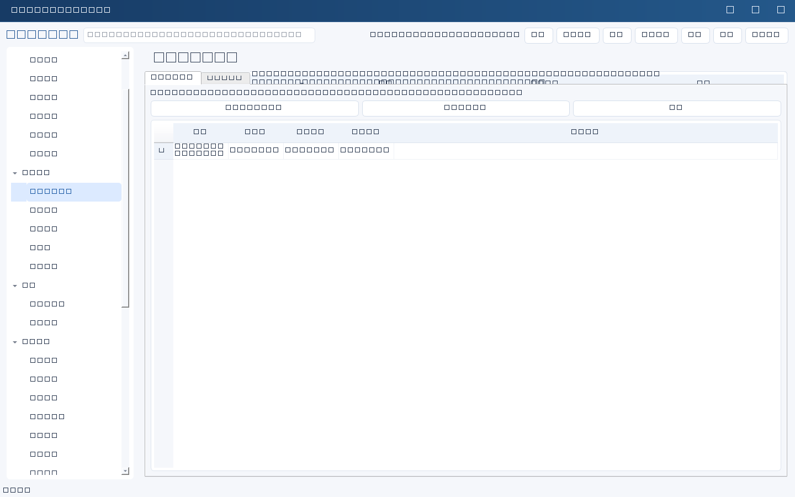
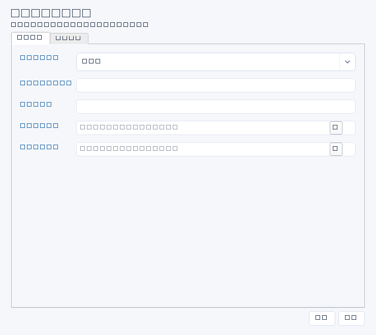
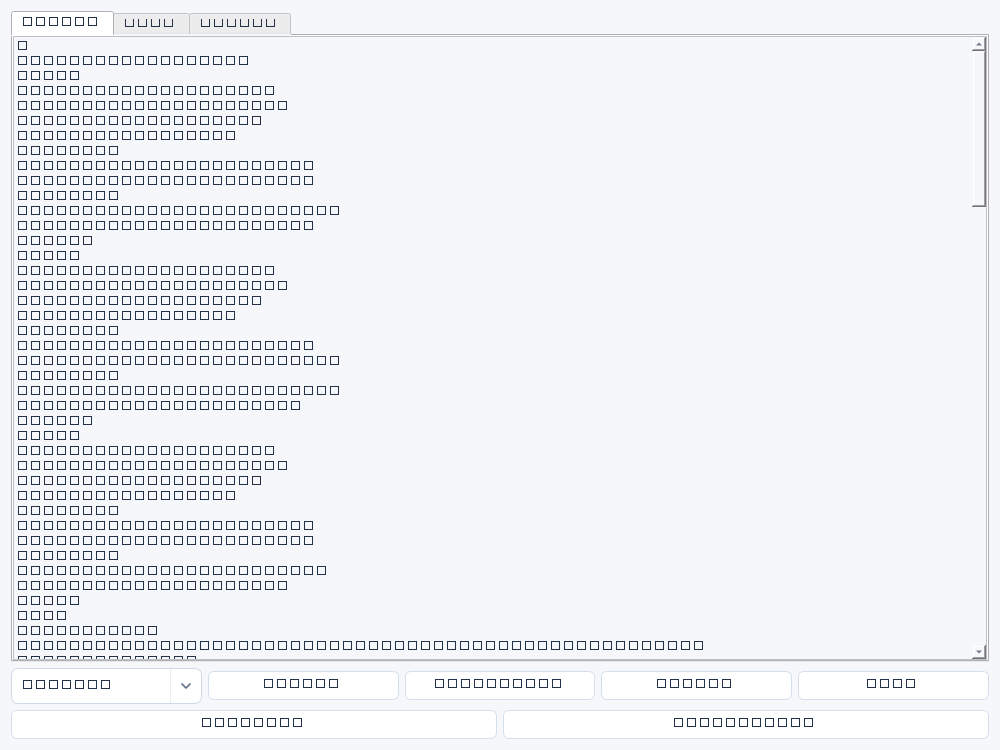

不是单一任务，而是一整套专项体系
在“项目规划→专项工作空间”管理。内置IPO IT配合、企业宣传支持、阶段项目推进模板。专项有独立范围的阶段、交付物、检查项、工作包任务、动态表单、AI提示词和汇报提纲，并复用IT基础台账。IPO模板不构成合规保证，要求需由券商会计师法务确认。
- 在工作空间页点击新建，选模板，填写名称、负责人和起止日期。
- 系统原子建立专属项目和工作包任务；进入空间查看阶段要求和关联事项。
- 按专属表单填写资料；关联已有系统、资产、风险等，不会自动拉入其他专项资料。
- 在统一任务列表推进专项任务；工作日志自动纳入关联范围。
- 生成专项报告或专项AI草稿，检查后再批准发送。AI调用前预览完整上下文并二次授权，资料变化需重新预览。
新增业务体系
切换配置式模板页签，复制现有模板后编辑。名称说明、阶段交付物与工作包可在结构化界面调整；专属表单、提示词及汇报提纲可在JSON配置区调整。也可导入经审查的JSON模板，预览确认后保存；导出只有模板配置，不含业务数据。模板不执行Python/JS、脚本或URL。已有空间使用创建时快照，不因模板修改被静默改变。
支持text/long/date/choice字段及必填规则；模板上限128KiB。没有在线插件商店、任意可执行插件或多用户权限隔离。阶段进度以初始工作包完成数统计；后续任务不会自动归入阶段。专属动态表单目前不支持逐字段AI填入，可使用专项AI生成草稿。





